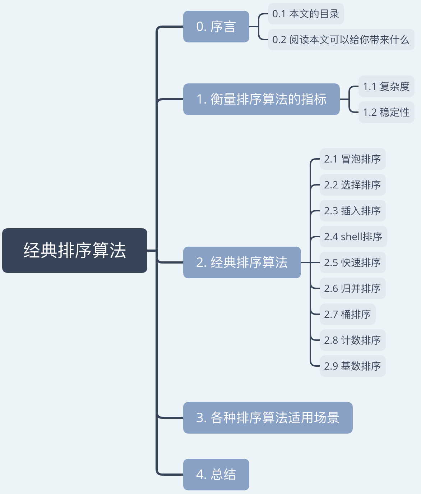
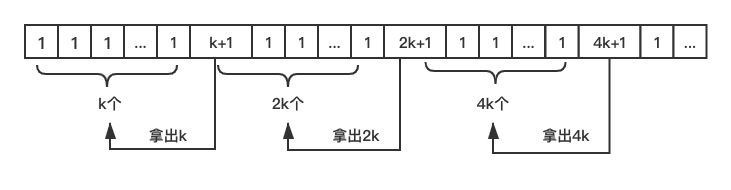
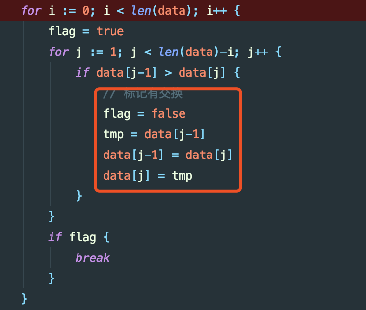
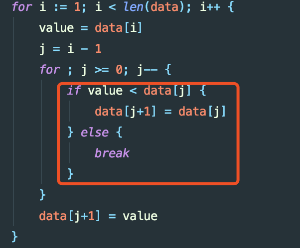
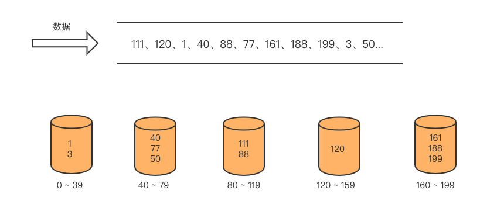
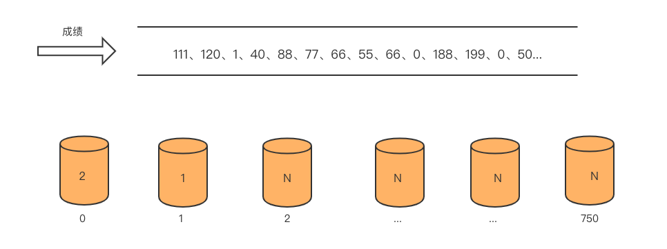
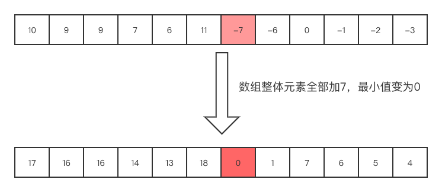
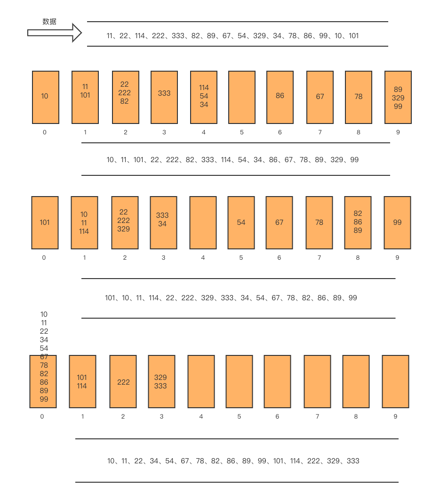
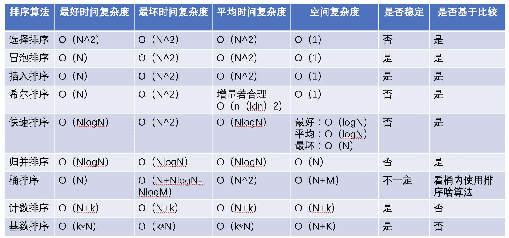

经典排序算法
说实话直接叫我手撕所有经典的排序算法（插入、选择、冒泡、快排、归并、桶、计数、基数），并分析所有排序算法的最好、最坏、平均时间复杂度，空间复杂度，是否稳定，各排序算法适用的场景… 说实话我不行，水平太菜了…
0. 序言
0.1 本文的目录

0.2 阅读本文可以给你带来什么
- 衡量排序算法的指标是啥
- 目前经典排序的算法
- 各排序算法适用场景
1. 衡量排序算法的指标
1.1 复杂度
复杂度分为时间复杂度和空间复杂度。时间复杂度和空间复杂度来是判断算法效率的重要指标。一般我们使用大O复杂度表示法。
时间复杂度又分为最好时间复杂度、最坏时间复杂度、平均时间复杂度、均摊时间复杂度等。空间复杂度也可以分为最好、最坏、平均空间复杂度。一般我们说的时间复杂度都是指最坏情况下的时间复杂度。
最好：最好情况下的复杂度。举个”栗子“：现在你需要给一组数据（整数）按从小到大排序，数据有序情况不可知。那么最好的情况则是给定的数据已经按从小到大的顺序排好了。
最坏：最坏情况下的复杂度。还是引用从小到大排序的栗子，最坏情况则是给定的数据是从大到小排序的，如5、4、3、2、1。
平均：平均情况下的复杂度。举个栗子：在一组数据（无序）中查找某个值。最好情况则是数据中的第一个值就是我需要找到即需查找一次，最坏情况则是这个元素在数据的最后一位或数据中没有改元素，那么平均的来算就是：（1+2+3+…+N+N)/(N+1)。为什么有2个N，其中最后一个N是没有找到。使用大O复杂度表示法则是：O（N）。
均摊：均摊是平均的一种特殊情况。举个栗子：现在需要不断地往容器中添加数据，当容器满了的时候，创建一个新容器其容量是目前容器的2倍。则需要把旧容器中的数据移动到新容器中。假设最初容器容量为k，现在开始插入数据，操作的次数为：1,1,1…,1,k+1,1,1,1…,1,2k+1,1,1,1…,1,4k+1,1,1,1….
那时间复杂度怎么算呢？

将扩容移动的次数均摊到每次插入上，所以均摊时间复杂度为：O（1）。
1.2 稳定性
什么叫稳定性？
举个栗子：比如数列 5、4、2、3、6、1、3，如果进行排序后这两个3的相对位置没有改变，则排序算法是稳定的，如果两个3的相对位置发生改变，则排序算法是不稳定的。相对位置可以这样理解：将第一个3记为3(a)，第二个3记为3(b)，如果排序后3(a)在3(b)前面则说明是稳定的，相反则说明不稳定。
2. 经典排序算法
使用go语言实现，相关排序算法。
2.1 冒泡排序
通过比较相邻元素的大小进行交换，一轮比较后可以确定一个元素的位置（此轮最大或最小元素）。
/**
冒泡排序：升序
*/
func bubbleSort(data []int) {
// 作为临时变量来交换
var tmp int
for i := 0; i < len(data); i++ {
for j := 1; j < len(data)-i; j++ {
if data[j-1] > data[j] {
tmp = data[j-1]
data[j-1] = data[j]
data[j] = tmp
}
}
}
}
/**
冒泡排序升级版：添加一个判断符，若一轮相邻元素之间没有交换，则数据已经有序
*/
func bubbleSortUpgrade(data []int) {
// 作为临时变量来交换
var tmp int
// 用来标记一轮中相邻元素有没有交换
var flag bool
for i := 0; i < len(data); i++ {
flag = true
for j := 1; j < len(data)-i; j++ {
if data[j-1] > data[j] {
// 标记有交换
flag = false
tmp = data[j-1]
data[j-1] = data[j]
data[j] = tmp
}
}
if flag {
break
}
}
}
冒泡算法的复杂度分析：
最好时间复杂度：O（N），已经有序只需要查询一轮。
最坏时间复杂度：O（N^2）,假设每次都交换，n-1,n-2,n-3…,1
平均时间复杂度：O（N^2）。这边可以通过有序度来计算。
什么叫有序度？有序度是数组中具有有序关系的元素对的个数。有序元素对：a[i] <= a[j]，如果 i < j。
如数组4、3、2、1,则有序度为0。数组1、2、3、4，则有序度为n * (n-1) / 2，也就是6。完全有序的数组的有序度叫作满有序度。逆有序度=满有序度 - 有序度 。排序的过程就是增加有序度，减少逆有序度，达到满有序度。
冒泡排序是相邻元素的比较和交换，每次交换有序度+1，逆有序度-1，所以交换的次数即逆有序度。最多交换次数即有序度为0，那么逆有序度为n * (n-1) / 2。最少交换次数即满有序度，那么逆有序度为0。所以平均交换次数为 n * (n-1) / 4 。
空间复杂度：O（1），属于原地置换算法
稳定：相邻元素大小值相等不做交换。
2.2 选择排序
选择排序每次一轮查询时选出最小（或最大值）与改轮最左边（或最右边）元素交换。
/**
选择排序：升序
*/
func selectSort(data []int) {
// select sort
var minIndex, tmp int
for i := 0; i < len(data); i++ {
minIndex = i
for j := i + 1; j < len(data); j++ {
if data[minIndex] > data[j] {
minIndex=j
}
}
if minIndex!=i{
tmp=data[i]
data[i]=data[minIndex]
data[minIndex]=tmp
}
}
}
最好、最坏、平均时间复杂度：O（N^2）
空间复杂度：O（1），属于原地排序算法。
不稳定：如5,8,5,2,9 第一次找到最小元素 2 与第一个 5 进行交换。
2.3 插入排序
插入排序即对一个一个元素进行插入，插入前元素都是有序的，对即将插入的元素，通过对比元素的值，移动有序元素位置，为即将插入的元素找到合适的位置。
/**
插入排序：升序
*/
func insertionSort(data []int) {
// 长度小于 2
if len(data) < 2 {
return
}
var value, j int
for i := 1; i < len(data); i++ {
value = data[i]
j = i - 1
for ; j >= 0; j-- {
if value < data[j] {
data[j+1] = data[j]
} else {
break
}
}
data[j+1] = value
}
}
最好时间复杂度：O(N)，数组原来就有序，会每步插入会执行break。
最坏时间复杂度：O(N^2)，数组原来是倒序。
平均时间复杂度：O(N^2)，在一个数组中插入一个元素的时间复杂度是O(N)，循环n次，则时间复杂度为O(N^2)。
空间复杂度：O（1），属于原地置换算法。
稳定性：由于相同大小元素不移动，稳定。
插入排序和冒泡排序比较
可以比较10000个随机数，两个算法的时间比较。
func main() {
dataBubble := make([]int, 10000)
dataInsert := make([]int, 10000)
var temp int
for i := 0; i < 10000; i++ {
temp = rand.Intn(1000)
dataBubble[i] = temp
dataInsert[i] = temp
}
starTime := time.Now()
bubbleSortUpgrade(dataBubble)
fmt.Println("bubble sort used time: ", time.Now().Sub(starTime))
starTime = time.Now()
insertionSort(dataInsert)
fmt.Println("insert sort used time: ", time.Now().Sub(starTime))
}
随机生成10000个数，然后分别使用冒泡和插入排序对10000个数进行排序（也可以讲10000个数设置为有序），会发现插入排序所消耗的时间会比冒泡排序消耗的时间少。why ？
看代码：
冒泡：

插入：

冒泡主要时间的消耗是：一次交换需要3个赋值语句。
2.4 shell排序
shell排序可以理解为分组插入排序。
/**
希尔排序
*/
func shellSort(data []int) {
increment := len(data)
for increment > 1 {
increment = increment/3 + 1
for i := increment; i < len(data); i++ {
for j := i; j-increment >= 0 && data[j] < data[j-increment]; j = j - increment {
data[j], data[j-increment] = data[j-increment], data[j]
}
}
}
}
增量dt=1(dt<dt-l<；…<d2<d1）。increment“增量”的如何选取其实是一个难题 ？迄今为止还没有人找到一种最好的增量序列。
时间复杂度：
- 最好时间复杂度O（N）,有序，不需要交换
- 最坏时间复杂度O（N^2）,逆序，每两个数都需要交换
- 平均时间复杂度： 研究证明，若增量的取值比较合理，Shell排序算法的时间复杂度约为O（n（ldn）2）
空间复杂度：O（1）
稳定性：不稳定，一次插入排序是稳定的，不会改变相同元素的相对位置，但在不同插入排序过程中，相同的元素可能在各自插入排序中移动，最终的稳定性就会被打乱。
2.5 快速排序
快速排序其实是冒泡排序的改进。在数据中选择一个分界值，通过一趟排序后会将要排序的数据分割成独立的两部分，其中一部分数据大于等于分界值，另一部分小于等于分界值。按照此方法将分界值的左边和右边再次进行排序，重复执行直到整个数据变成有序序列。这是一个递归的过程。
/**
快速排序：升序
*/
func quickSort(data []int, start, end int) {
if start >= end {
return
}
pivot := partition(data, start, end)
quickSort(data, start, pivot-1)
quickSort(data, pivot+1, end)
}
func partition(data []int, p, r int) int {
var tmp int
pivotValue := data[r]
i := p
for j := p; j <= r-1; j++ {
if data[j] < pivotValue {
// 交换
tmp = data[i]
data[i] = data[j]
data[j] = tmp
i++
}
}
tmp = data[i]
data[i] = pivotValue
data[r] = tmp
return i
}
最好时间复杂度：O（NlogN），每次的pivot的值选取的很好，partition将左右均分。
最坏时间复杂度：O（N^2），每次的pivot的值选的很差，partition只能分出一个。
平均时间复杂度：O(NlogN)，证明见知乎：https://www.zhihu.com/question/22393997
空间复杂度：平均和最好的复杂度为O（logN），最坏复杂度为O（N）
稳定性：不稳定，如：3、1、2、3、1、4、5、6，将第一个3作为pivot的，
2.6 归并排序
归并排序采用分治法，分：其实就是把未排序数列不断细分，治：不断将两个有序数列合并成一个大的有序序列。
/**
归并排序：升序
*/
func mergeSort(data []int, start, end int) {
if start >= end {
return
}
middle := start + (end-start)/2
mergeSort(data, start, middle)
mergeSort(data, middle+1, end)
merge(data, start, middle, end)
}
func merge(data []int, start, middle, end int) {
tempData := make([]int, end-start+1)
for i := 0; i < end-start+1; i++ {
tempData[i] = data[start+i]
}
currentIndex := start
var i, j int
for i, j = 0, middle-start+1; i <= middle-start && j < end-start+1; {
if tempData[i] <= tempData[j] {
data[currentIndex] = tempData[i]
i++
} else {
data[currentIndex] = tempData[j]
j++
}
currentIndex++
}
for ; i <= middle-start; i++ {
data[currentIndex] = tempData[i]
currentIndex++
}
for ; j < end-start+1; j++ {
data[currentIndex] = tempData[j]
currentIndex++
}
}
最好时间复杂度：O（NlogN）
最坏时间复杂度：O（NlogN）
平均时间复杂度：O（NlogN）
归并排序的时间复杂度是O（NlogN）
证明：T（N）=2 * T (N/2)+N=4 * T (N/4) + 2 * N = 8 * T (N/8) + 3 * N = … = 2^k * T (N/2^k) + k * N
T（1）= C ；当 n 为 1 时只需要常量级的执行时间
当 k 很大时，N/2^k =1 时，k=log2 N，所以 T（N）= C * N+NlogN，使用大O时间复杂度表示为：O（N）= NlogN
空间复杂度：O（N），合并时使用的空间
稳定性：稳定，合并前后顺序不变。
归并排序的优化点：merge的时候判断下左边有序序列的最大值是否小于右边有序序列的最小值，如果是其实就不需要进行merge操作即治（并）。
/**
归并排序：升序
*/
func mergeSortImprove(data []int, start, end int) {
if start >= end {
return
}
middle := start + (end-start)/2
mergeSort(data, start, middle)
mergeSort(data, middle+1, end)
// 当左边最大元素大于右边最小元素时，进行合并
if data[middle] > data[middle+1] {
merge(data, start, middle, end)
}
}
2.7 桶排序
什么叫桶排序？桶排序使用了分治思想，将数据分到几个有序的桶，将桶里的数据进行排序，待桶内的数据排序完后，再把每个桶里的数据按照顺序依次取出，组成的序列就是有序的。

举个例子如上图所示，需要对一组数据进行排序，数据范围是 0 ～199 ，按照数据值的大小分配到 5 个桶中，然后对每个桶中的数据进行排序。
/**
桶排序
*/
func bucketSort(data []int, num int) {
maxValue := findMaxValue(data)
scope := (maxValue + 1) / num
bucket := make([][]int, num)
for i := 0; i < num; i++ {
bucket[i] = make([]int, 0)
}
for i := 0; i < len(data); i++ {
index := data[i] / scope
bucket[index] = append(bucket[index], data[i])
}
for i := 0; i < num; i++ {
sortInBucket(bucket[i])
}
index := 0
for i := 0; i < num; i++ {
for j := 0; j < len(bucket[i]); j++ {
data[index] = bucket[i][j]
index++
}
}
}
/**
查找数组元素中的最大值
*/
func findMaxValue(data []int) int {
max := data[0]
for i := 1; i < len(data); i++ {
if max < data[i] {
max = data[i]
}
}
return max
}
/**
桶中执行的算法
*/
func sortInBucket(data []int) {
quickSort(data, 0, len(data)-1)
}
/**
快排：升序
*/
func quickSort(data []int, start, end int) {
if start >= end {
return
}
pivot := partition(data, start, end)
quickSort(data, start, pivot-1)
quickSort(data, pivot+1, end)
}
/**
分割找 pivot
*/
func partition(data [] int, start, end int) int {
pivotValue := data[end]
i := start
for j := start; j <= end-1; j++ {
if data[j] < pivotValue {
data[j], data[i] = data[i], data[j]
i++
}
}
data[i], data[end] = data[end], data[i]
return i
}
时间复杂度：
- 将n个数分配到m个桶中，这个时间复杂度为O（N）
- 利用比较先进的比较排序算法（插入，快排）对桶内的数据进行排序，上述排序算法桶内元素使用了快排（已知快排的最好时间复杂度为O（NlogN）、最坏为O（N^2）、平均为O（NlogN））， 其时间复杂度为 ∑ O(Ni*logNi) 。其中Ni 为第i个桶的数据量。
显然，第二步对桶中的元素进行排序是影响桶排序的决定因素。因为比较排序最好的时间复杂度为O（NlogN），尽量减少桶内元素来提高效率。
- 将数据平均分发到每个桶中
- 尽量增大桶的个数，在极限的状态下，每个桶只有一个元素那么就不需要对桶中的元素进行排序。不过这样如果数据量过大则会大大牺牲空间复杂度来换取时间复杂度，空间浪费严重
对于N个待排序数据，M个桶，每个桶[N/M]个，则基于比较排序的桶排序的平均时间复杂度为： O(N)+O(M*(N/M)log(N/M))=O(N+N(logN-logM))=O(N+N*logN-N*logM)
当M接近N时，则桶排序的最好时间复杂度为O（N）
最坏情况所有数据都在一个桶内，且桶内比较排序算法情况最坏，即O（N^2）
空间复杂度：O（N+M），N是元素的个数，M为桶的个数
稳定性：桶排序的稳定性需要看，桶中元素排序使用的是什么算法，比如上述使用快排，所以不稳定。
2.8 计数排序
计数排序其实桶排序的一种特殊情况。需要对n个数进行排序，n个数取值范围不大，比如最大值为k，则可以把数据划分为k个桶，每个桶中的数据值一样。
比如高中时每次月考都需要对考生成绩进行排序，假设月考总分为750分，则建立751个桶。每个桶记录相同元素的次数。

/**
计数排序
*/
func countingSort(data []int, scope int) {
buckets := make([]int, scope+1)
for i := 0; i < len(data); i++ {
buckets[data[i]] += 1
}
index := 0
for i := 0; i <= scope; i++ {
for j := 0; j < buckets[i]; j++ {
data[index] = i
index++
}
}
}
时间复杂度：最好、最坏、平均时间复杂度为 O（N+K）
空间复杂度：O（K），k为取值数据范围
若数据中包含负数怎么办 ？
可以将整个数组的整体加上一个整体，使整个数组的最小值为0，即相当把整个数组往右移动。

/**
计数排序
*/
func countingSort(data []int) {
if len(data) <= 1 {
return
}
maxValue, minValue := data[0], data[0]
// find maxValue and minValue
for i := 1; i < len(data); i++ {
if data[i] > maxValue {
maxValue = data[i]
}
if data[i] < minValue {
minValue = data[i]
}
}
// 建立桶
bucket := make([]int, maxValue-minValue+1)
for i := 0; i < len(data); i++ {
bucket[data[i]-minValue]++
}
// 累加
for i := 1; i < maxValue-minValue+1; i++ {
bucket[i] = bucket[i] + bucket[i-1]
}
tempData := make([]int, len(data))
for i := len(data) - 1; i >= 0; i-- {
tempIndex := bucket[data[i]-minValue]
tempData[tempIndex-1] = data[i]
bucket[data[i]-minValue]--
}
// 拷贝数据到data中
for i := 0; i < len(data); i++ {
data[i] = tempData[i]
}
}
时间复杂度：最坏、平均、最好时间复杂度为O（N+K），K为数据取值范围；若O（K）==O（N），则时间复杂度为O（N）
空间复杂度：O（N+K）
稳定性：稳定
2.9 基数排序
基数排序原理是将整数按位切割成不同的数字，然后按个位数分别比较。

/**
基数排序
*/
func radixSort(data []int) {
maxValue := data[0]
for i := 1; i < len(data); i++ {
if maxValue < data[i] {
maxValue = data[i]
}
}
maxDigits, divisor := 0, 1
for maxValue > 0 {
maxDigits++
maxValue = maxValue / 10
}
bucketData := make([][]int, 10)
var index int
for i := 0; i < maxDigits; i++ {
for j := 0; j < 10; j++ {
bucketData[j] = make([]int, 0)
}
for j := 0; j < len(data); j++ {
index = (data[j] / divisor) % 10
bucketData[index] = append(bucketData[index], data[j])
}
index = 0
for j := 0; j < 10; j++ {
for k := 0; k < len(bucketData[j]); k++ {
data[index] = bucketData[j][k]
index++
}
}
divisor = divisor * 10
}
}
时间复杂度：平均、最好、最坏都是O（K*N），其中K为常数是维度
空间复杂度：O（N+K）
稳定性：稳定
3. 各排序算法适用场景
先看大O复杂度图:

排序算法的选择因根据业务场景从这几个角度选取：
- 稳定性，如果业务场景要求排序算法必须是稳定的，那么首先就可以排除不稳定的排序算法
- 时间复杂度和空间复杂度，比如手机我对内存要求比较高，尽量少使用内存，那么空间复杂度的权重则大于时间复杂度。
- 如果对小规模数据进行排序，可以选择时间复杂度是O（N^2）的算法；如果对大规模数据进行排序，时间复杂度是O（NlogN）的算法会更加高效。所以，为了兼顾任意规模数据的排序，一般都会首选时间复杂度是O（NlogN）的排序算法来实现排序函数。
- 桶排序比较适合在外部排序中，所谓的外部排序就是数据存储在外部磁盘中，数据量比较大，内存有限，无法将数据全部加载到内存中。
- 计数排序只能用在数据范围不大的场景中，如果数据范围k比要排序的数据n大很多，就不适合计数排序了。如果要给负整数或其他类型数据，要将其在不改变相对大小的情况下，转化为非负整数。
- 基数排序对排序的数据是有要求的，需要可以分割出独立的“位”来比较，而且位之间有递进的关系，如果a数据的高位比b数据大，那么剩下的低位就不用比较了。此外，每一位的数据范围不能太大，要可以用线性排序算法来排序，否则，基数排序的时间复杂度就无法做到O（N）了。
4. 总结

参考极客时间数据结构与算法之美专栏——作者王争
11——14小节学习总结。推荐！！！
- 原文作者：萝卜头LJW
- 原文链接：https://robotljw.github.io/post/2020-1-27-classical-sorting-algorithm/
- 版权声明：本作品采用知识共享署名-非商业性使用-禁止演绎 4.0 国际许可协议进行许可，非商业转载请注明出处（作者，原文链接），商业转载请联系作者获得授权。